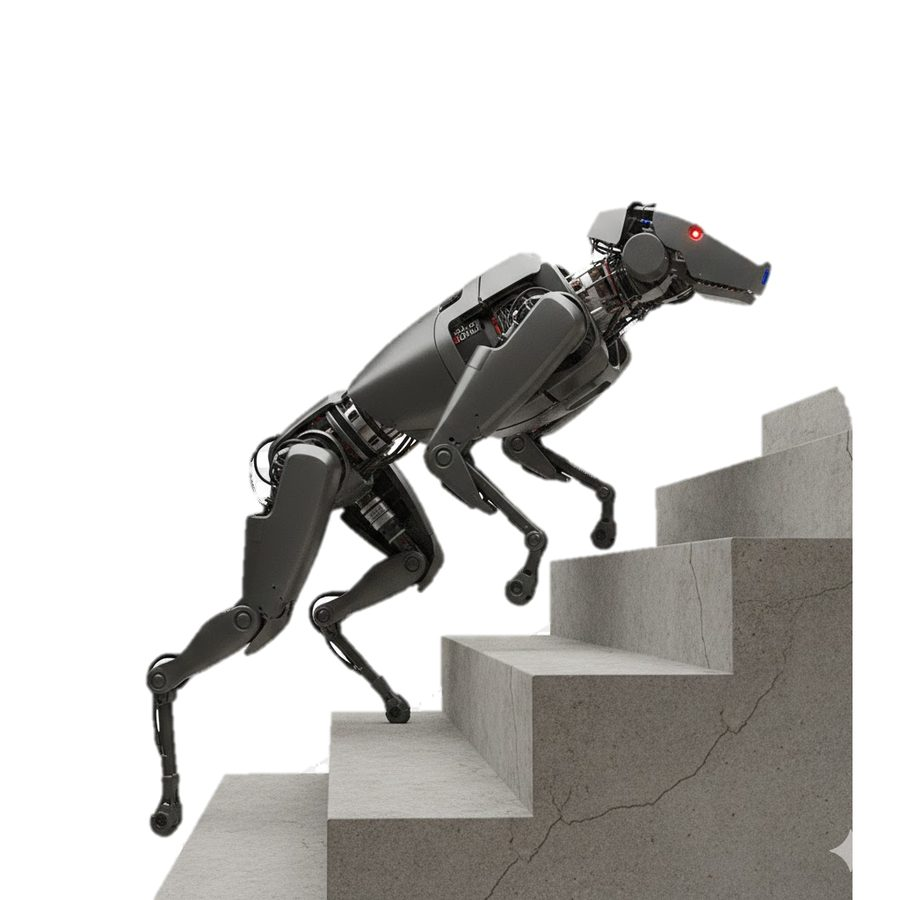

Members will design a quadruped robot from a blank sheet, then build, assemble and test it themselves. Instead of buying a finished robot, the team works through every decision: leg geometry, actuators, the frame, batteries and wiring, motor control and the walking controller.
Building our own robot means members understand every part of it, can repair it themselves, and leave a documented platform that the next cohort can improve and use for guide-dog, delivery or inspection work.
- Type
- Design-and-build project
- Status
- Confirmed for 2026–27
- Groups
- All four technical groups
- Goal
- A robot dog that stands, walks and turns reliably, with full documentation
The robot, subsystem by subsystem
Each technical group owns one part of the robot; design reviews bring them together.
Legs and frame
Mechanical Design. Typically three joints per leg (hip abduction, hip and knee), a light and stiff body, and protected joints for falls.
Actuators and power
Electronics. Motors with low-ratio gearboxes and encoders, motor drivers on a CAN bus, the battery and an emergency stop.
State estimation
Perception. IMU and joint encoders to estimate body orientation and speed; a depth camera later for stairs and obstacles.
Walking control
Software & AI. A model-based gait controller first, then reinforcement-learning policies trained in simulation.
Engineering foundations
The equations behind a walking robot.
Leg inverse kinematics
Knee angle needed to put the foot at (x, y) for thigh length l₁ and shank length l₂.
Joint torques from foot force
The leg Jacobian maps the ground force at the foot to the torque each motor must give: the basis for actuator sizing.
Static stability
When walking slowly, the centre of mass must stay inside the polygon formed by the feet on the ground.
Gait duty factor
The fraction of each step a foot is on the ground. Walking uses β > 0.5; trotting and running use less.
Project phases
- RequirementsSize, payload, speed and budget targets
- Design and simulationCAD, leg kinematics, gait tests in simulation
- BuildMachining, 3D printing, PCBs and wiring
- Assembly and bring-upJoint calibration, motor control, safety stop
- Walking testsStanding, walking, turning, then a public demo
